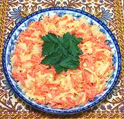

|
Radish Carrot SaladUzbek - Rediska va Sabzi Salati | ||||
| Makes: Effort: Sched: DoAhead: |
1-1/2 # * 1/2 hrs Best |
This salad is very like coleslaw - but without any cabbage. It can be served similarly to the way coleslaw is. One and a half pounds will make at least 4 salad portions. | |||
|
|
8 8 10 1 1/8 1-1/2 3 2 |
oz oz oz t t T T t |
Daikon Radish Carrots Potato (1) Salt Pepper black Mayonnaise Sour Cream Lemon Juice (2) |
Make - (2+ hrs - 20 min work)
|